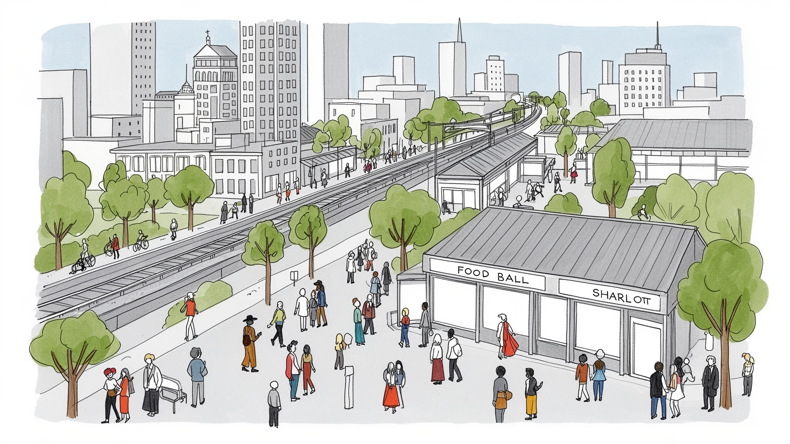
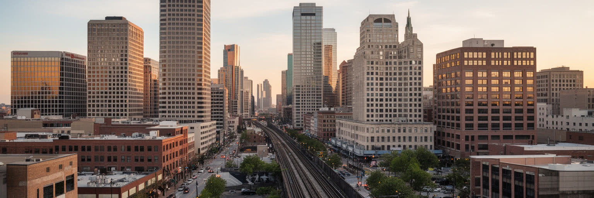
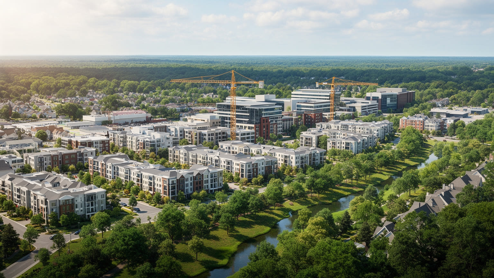
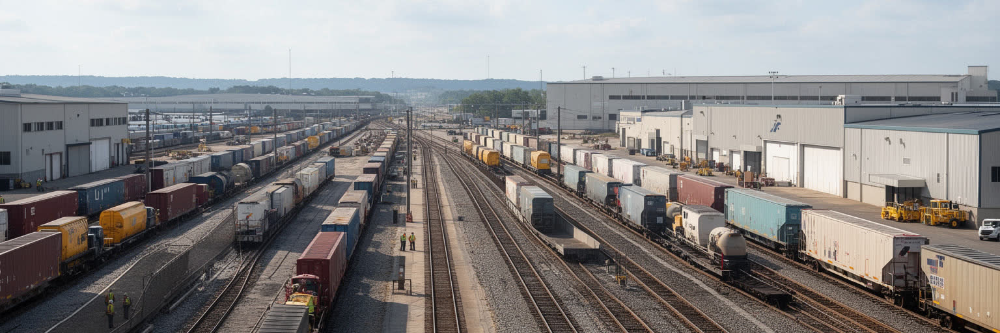
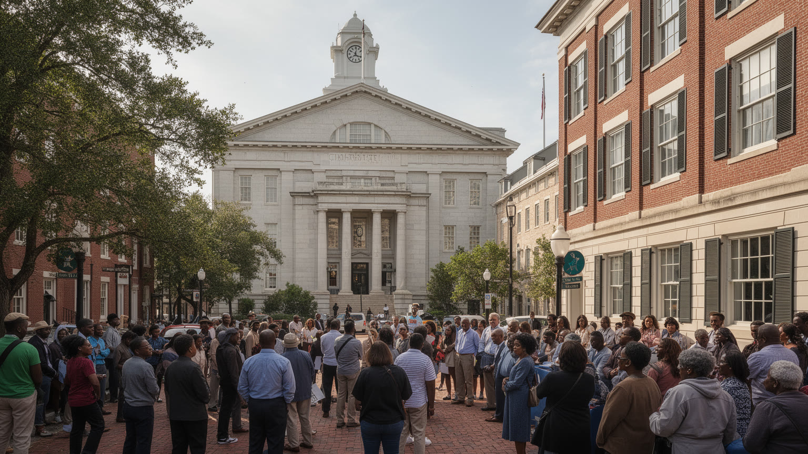
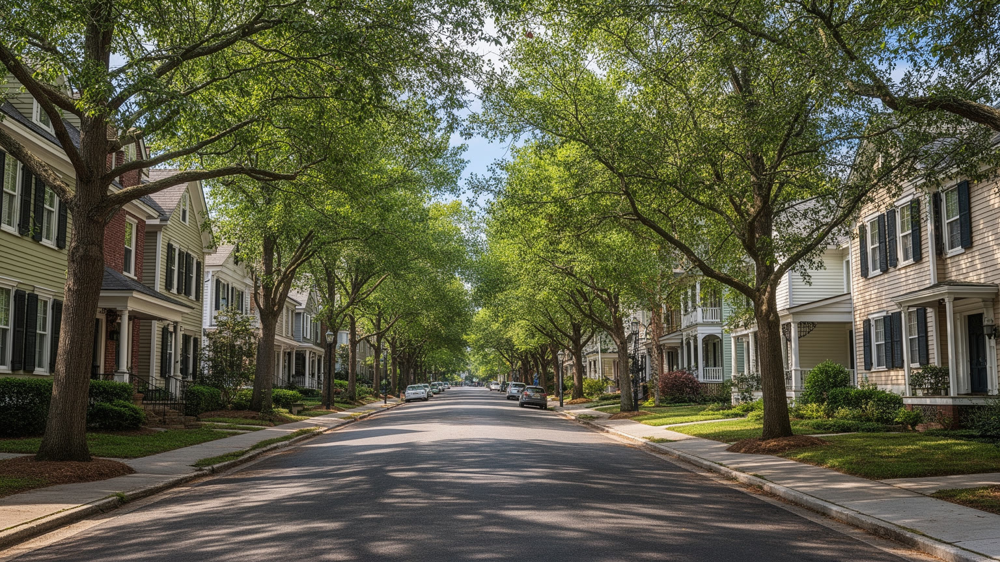
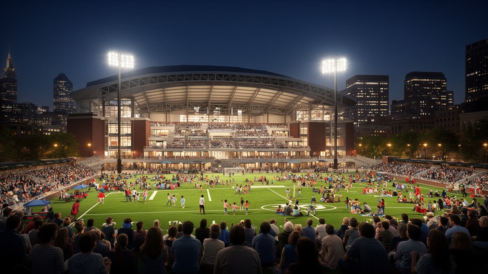
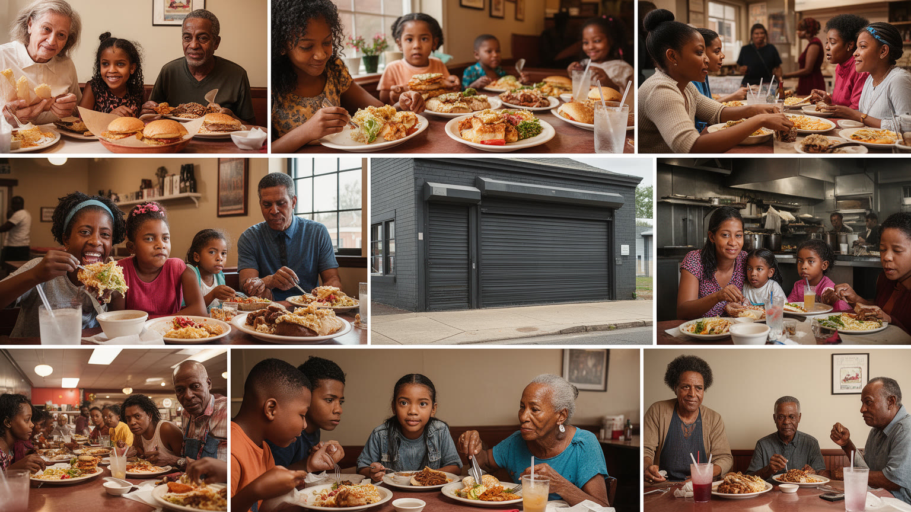
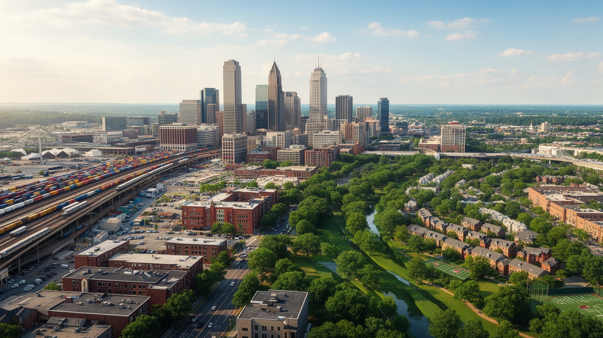

地政学
シャーロットは州都ではありませんが、金融、空港、物流、メディア、大学を束ね、南東部の企業配置を左右します。アトランタや研究三角地帯とも競い、内陸から南部の成長軸を広げる都市です。州政治にも影響します。

🇺🇸 アメリカ合衆国 / 北米 / World City Atlas
銀行業の高層街、南部の人口流入、空港と鉄道、黒人史と公民権、住宅価格の上昇、スポーツと食文化、緑道のある郊外生活が重なるカロライナの中核都市です。
都市の骨格
シャーロットは、アップタウンの金融街と巨大空港、環状道路、湖沿いの郊外、黒人コミュニティの歴史、大学、スポーツ施設が一つの都市圏を作ります。成長の勢いと生活費の上昇が同じ街路に表れます。

シャーロットは州都ではありませんが、金融、空港、物流、メディア、大学を束ね、南東部の企業配置を左右します。アトランタや研究三角地帯とも競い、内陸から南部の成長軸を広げる都市です。州政治にも影響します。
銀行、航空、医療、エネルギー、建設、物流、スポーツ、大学が雇用を作ります。専門職の周囲で、空港、清掃、介護、飲食、倉庫、建設の仕事が厚く、家賃と通勤距離の差が暮らしを分けます。夜勤の負担も重いです。
黒人教会、移民の礼拝、大学、博物館、自動車レース、プロスポーツ、南部料理、祝祭が文化を作ります。公民権運動の記憶は、成長都市の明るさの背後で教育や住宅を問い続けています。夜の音楽や祝祭も響きます。
住民は車、ライトレール、空港、湖、緑道、球場、郊外の学校を使い分けます。旅行者は銀行街、博物館、レース文化、食、スポーツを巡り、住宅費や交通負担と隣り合う日常を見ます。湿気と空港音も強く感じます。

シャーロットの第一印象は、アップタウンに集まる銀行本部と高層建築です。東部の巨大都市ほどの規模ではありませんが、銀行合併、州を越えた規制緩和、企業誘致、空港アクセス、比較的低かった生活費が重なり、米国有数の金融拠点へ成長しました。朝の広場には銀行員、法律家、会計士、IT担当、警備員、清掃員、カフェの店員、配達員が同じ時間帯に流れ込み、昼の人口と夜の静けさが大きく変わります。金融業は税収と高賃金を生む一方、住宅市場や所得差にも影響します。高層街の外側には、古い黒人地区や工業地、再開発が進む住宅地があり、資本の集まり方が都市の地図を塗り替えてきました。銀行の存在を読むには、企業ロゴだけでは足りません。住宅ローン、信用、投資、地元中小企業への融資、文化施設や大学への寄付、政治献金まで、金融は日常の制度として都市に入り込みます。金利変化は、中心部の空室、住宅販売、地元事業の資金繰りへすぐ波及します。アップタウンの輝きは、南部の経済力を象徴すると同時に、誰が成長へ参加できるのかを問う都市の表情です。昼休みには屋台やフードトラックが並び、銀行員と工事作業員が同じ歩道で列を作ります。地元紙やテレビは、再開発、住宅ローン、企業決算、寄付の行き先を追い、金融の判断が市民生活へどう届くかを知らせます。高層街の足元を歩くと、冷房の効いたロビー、夏の湿気、バスを待つ人の影が一度に見えます。

シャーロットは、米国南部の人口移動を読むうえで重要な都市です。北東部や中西部からの移住者、大学を出た若者、企業の転勤者、移民、周辺郡からの通勤者が流れ込み、都市圏は広い郊外へ伸び続けています。温暖な気候、雇用、比較的安かった住宅、税とビジネス環境、空港の利便性は成長を支えましたが、その成功は新しい負担も生みました。家賃と住宅価格は上がり、教師、看護師、空港職員、飲食労働者、子育て中の家族が中心に近い場所へ住みにくくなっています。郊外の新築住宅は選択肢を増やす一方、車依存、渋滞、学校区の格差、森や農地の転用を広げます。UNC Charlotte、Queens University、Johnson C. Smith Universityに通う学生は、研究室、寮、アルバイト先、Lynxの駅を行き来し、若い人口の厚みを作ります。成長の活気は、建設現場、移転企業、混み合う高速道路、満員の教室、古い住民の不安として同時に現れます。人口増を成功の数字として見るだけでは足りません。誰が成長の利益を受け、誰が長い通勤と高い家賃を引き受けているのかを確認する必要があります。都市圏全体で住宅、学校、交通、救急、緑地を考えられるかが、成熟度を決めます。大学の試合や卒業式は、家族をホテル、飲食店、買い物地区へ呼び込みます。子どもを持つ世帯は学校区と保育料を比べ、高齢者は病院、教会、買い物、運転をやめた後の移動を気にします。成長都市の評価は、若い専門職だけでなく、長く住む人が安心して年を重ねられるかにも左右されます。

内陸都市であるシャーロットの国際性は、港ではなく空港、鉄道、高速道路、倉庫の組み合わせに表れます。シャーロット・ダグラス国際空港は乗り継ぎの巨大拠点で、金融業の出張、観光、貨物、移民家族の移動、航空関連雇用を都市に結びつけます。上空を低く抜ける機体音は西側の住宅地に届き、早朝便に合わせて働く人の生活時間も変えます。貨物鉄道と州間高速道路は、カロライナの製造業、流通センター、小売、食品、電子商取引の流れを支えます。物流の仕事は、パイロットや整備士だけでなく、手荷物、清掃、警備、倉庫、トラック、配車、夜勤の労働に広がります。空港の近くでは騒音、排気、土地利用、低所得地区への環境負担も問題になります。高速道路の便利さは企業を呼びますが、車を持たない人には通勤の壁にもなります。Lynxの列車が駅へ入る金属音は、中心軸の暮らしを変えました。それでも都市圏全体を公共交通だけで暮らすには難しさが残ります。乗り継ぎ客には短い待ち時間として見える都市が、住民には夜間便の音、早朝勤務、長いバス移動として感じられます。その差を埋める交通政策が問われています。倉庫の周辺では配送車が絶えず、空港道路ではスーツケースを引く旅行者と夜勤明けの従業員が交差します。雨上がりの滑走路の匂い、ターミナルの放送、貨物列車の低い振動は、内陸都市が外の世界とつながる感覚を日常化します。物流の効率は、静かな住宅地の睡眠や道路の安全とも切り離せません。
シャーロットの雇用は、金融と専門サービスだけで説明できません。銀行のオフィス、医療機関、エネルギー企業、大学、プロスポーツ、建設現場、空港、ホテル、飲食店、倉庫、介護施設が互いに依存しています。高収入の専門職が増えるほど、ランチを作る人、ビルを清掃する人、子どもを預かる人、荷物を運ぶ人、夜の警備をする人の需要も増えます。昼時のフードトラック、空港近くの早朝シフト、倉庫の夜勤、介護施設の送迎は、金融都市の見えにくい生活基盤です。ところが賃金の伸びは同じではなく、家賃と交通費の上昇はサービス労働者に強く響きます。郊外の安い住宅へ移れば通勤時間が長くなり、車の維持費も家計を圧迫します。金融都市の豊かさは、低所得者の資産形成や銀行サービスへのアクセスという問題も抱えます。歴史的な人種差別は、住宅ローン、学校、雇用機会、資産の差として現在に残ります。職業訓練やコミュニティカレッジは、低賃金から専門職へ移る通路になりえますが、学費、保育、交通が壁になります。成長の質は、働く人が都市圏で暮らし続けられる条件によって測られます。路上の弁当販売、清掃会社の小さな事務所、家事代行、保育、介護は、公式統計に見えにくい都市経済です。高齢者を支える訪問介護や病院の補助職は不可欠ですが、賃金と住宅費の差に苦しみます。子どもの放課後ケアを確保できるかどうかも、親が夜勤や早朝勤務を続けられるかを左右します。

シャーロットの近代史を読むには、黒人コミュニティ、公民権運動、人種隔離、教育と住宅の不平等に向き合う必要があります。黒人教会、学校、商店街、大学、地域新聞、相互扶助は、差別の中で生活と政治参加を支えてきました。学校統合をめぐる司法判断やバス通学は、全米の公民権史の中でも重要な論点になりました。今日の都市は多様で成長する場所として語られますが、所得、学力、住宅所有、健康、警察との関係には人種による差が残ります。Juneteenth、MLK記念行事、黒人文化フェスティバルは、祝祭であると同時に、失われた街区と抵抗の記憶を確認する場です。再開発は古い黒人地区の土地価値を上げる一方、長く住んだ人を追い出す力にもなりえます。博物館や記念施設は過去を学ぶ入口ですが、記憶を観光資源にするだけでは足りません。教育予算、通学区域、低価格住宅、公共交通、起業支援、医療アクセスの中で歴史を扱う必要があります。新しい住民が増えるほど、土地の名前や建物の由来を学び、開発の利益を地域へ戻す仕組みが必要になります。記憶を聞く相手を近隣に残る住民や団体へ広げる姿勢も欠かせません。礼拝後の食事、学校の同窓会、近隣のパレード、地元メディアの追悼記事は、家族史と都市史を重ねます。若い世代は大学やスポーツの場で新しい関係を作りますが、祖父母の世代が経験した隔離の記憶は、住む場所や学校選びの会話に残ります。祝祭の音楽と演説は、喜びと要求を同時に運びます。

シャーロットの魅力は、アップタウンだけでなく、ディルワース、プラザ・ミッドウッド、ノーダ、サウスエンド、ウェストサイド、郊外の住宅地など、性格の異なる近隣にあります。古い路面電車郊外、倉庫を改装した飲食街、黒人コミュニティの歴史を持つ地区、新しい集合住宅、戸建ての並ぶ郊外が、短い距離で切り替わります。ライトレール沿線では開発が進み、歩いて飲食店や職場へ行ける暮らしが増えましたが、地価上昇と家賃の高騰も加速しました。SouthParkの大型店、NoDaの小さな店、Plaza Midwoodの古着店やバー、週末のファーマーズマーケットは、買い物を通じて近隣の個性を見せます。子ども連れは公園、図書館、学校区を見比べ、高齢者は医療、バス停、日陰の歩道、近所の見守りを生活条件として考えます。近隣の個性は、カフェや壁画だけでなく、教会、床屋、食料品店、公園、バス停、近所づきあいによって作られます。住宅の論点は、所得、人種、交通、学校区、金融アクセスと結びつきます。どの地区が流行しているかより、誰がそこに残れるのかを見る必要があります。毎日の移動と買い物のしやすさが、近隣の公平性を決める大切な物差しになります。夜になるとノーダやサウスエンドでは音楽と醸造所のざわめきが歩道へ漏れ、郊外では車道沿いの大型店が生活を支えます。買い物の便利さは所得と交通手段に左右され、食料品店が遠い地区では市場や移動販売の役割が重くなります。住宅の議論は、家の広さだけでなく、日々の用事をこなせる距離の論点でもあります。

シャーロットの文化は、銀行街の実務的な顔だけではありません。Panthersのフットボール、Hornetsのバスケットボール、Charlotte FCのサッカー、NASCAR、大学スポーツ、音楽、劇場、美術館、フェスティバルが、週末の都市のリズムを作ります。レース文化はカロライナの工業、修理工場、郊外の道路、テレビ産業、家族の娯楽と結びつき、単なる観戦を越えた地域の記憶を持ちます。プロスポーツの試合日は、アップタウンのバー、ホテル、駐車場、警備、清掃、配車、屋台、放送の労働を一気に増やします。Charlotte ObserverやローカルTVは、試合結果、交通、学校、犯罪、開発計画を伝え、都市の会話を形づくります。スポーツは都市を一つに見せる力を持ちますが、チケット価格や交通手段によって参加しやすさは変わります。NoDaやSouth Endの夜は、ライブ会場、醸造所、DJ、タコス店、帰宅するLynxの音でにぎわいます。若いアーティストや小さなライブ会場は、家賃上昇や開発によって居場所を失いやすいです。大きな試合と同時に、教会の音楽、学校の演奏会、近隣の壁画を見ることで、都市文化の厚みが見えてきます。大学の試合は卒業生と学生を結び、街のバーや家庭のテレビを週末の応援席に変えます。試合前の肉の匂い、醸造所の麦芽、湿った夜風、ライトレールのブレーキ音は、観光案内だけでは伝わりにくい感覚です。祭りの露店や路上演奏も、都市文化を支える小さな経済になります。

シャーロットの食は、南部料理と新しい移民の味が交わる日常の地図です。バーベキュー、フライドチキン、ビスケット、スイートティー、ソウルフードは地域の記憶を伝え、黒人家庭、教会、労働者の昼食、郊外の家族の集まりと結びつきます。煙の香り、甘い茶、揚げ物の油、夏の湿気が混ざる食堂は、観光名所より身近な都市の入口です。そこへメキシコ、中米、カリブ、インド、ベトナム、韓国、中東、アフリカ系の食堂や食料品店が加わり、広い商業地に多言語の生活が現れます。フードトラックはオフィス街、醸造所、大学周辺、工事現場を回り、路上経済の小さな起業を支えます。ファーマーズマーケットでは、地元野菜、蜂蜜、パン、花、コーヒーを買う家族や高齢者が朝の会話を交わします。移民は飲食だけでなく、建設、医療、清掃、介護、配送、ホテル、大学、技術職にも関わります。一方で、就労資格、言語、医療保険、学校支援、住宅の過密、長い通勤は大きな論点です。家族経営の店は、起業の場であり、情報交換の場であり、故郷とのつながりを保つ場所でもあります。食から読むと、金融都市の硬いイメージの下に、移住者が作る公共圏が見えてきます。買い物袋を抱えた学生、教会帰りの家族、夜勤前の空港職員が同じ店に寄る時、食は階層を少しだけ横断します。人気地区の家賃上昇は小さな店を押し出すため、市場、屋台、共同キッチン、郊外の商業地が新しい受け皿になります。味の広がりは、都市が住民の働く時間をどう支えるかを映します。
シャーロットの気候は、蒸し暑い夏、短い冬、春秋の穏やかさ、突然の雷雨によって暮らしを形づくります。午後に空が黒くなり、雷鳴が近づき、濡れたアスファルトから熱気が戻る感覚は、南部内陸都市の日常です。屋外スポーツ、郊外の庭、公園、湖、緑道は魅力ですが、暑さ、豪雨、洪水、空調費、花粉、舗装面の熱は負担になります。Little Sugar Creek Greenwayなどの緑道では、朝のランニング、自転車通勤、ベビーカーの散歩、高齢者の短い運動が同じ道を使います。緑道は散歩や自転車の道であるだけでなく、洪水を受け止め、生き物の通り道を残し、車に頼らない移動を可能にするインフラです。ただし、良い公園や木陰がある地区と、歩道や日陰の少ない地区では、同じ気温でも健康リスクが違います。気候への備えは、低所得世帯、高齢者、屋外労働者、車を持たない若者を守る都市政策になります。シャーロットの緑の評判を本物にするには、樹冠、排水、公共交通、公園管理、住宅断熱、冷房支援を同じ計画として扱う必要があります。木陰、冷房支援、バス停の日よけまで含めて、気候適応は生活の公平性に直結します。強い雨のあとに小川が濁り、低地の道路が冠水する時、開発の配置と排水の弱さが見えます。緑道を観光資源だけでなく、学校や職場へ向かう安全な道として育てられるかも重要です。夏の暑さは電気代を押し上げ、古い住宅や屋外労働に重くのしかかります。

シャーロットは、銀行都市、南部の移住先、空港の結節点、スポーツの街として分かりやすい顔を持ちます。しかし、その単純像では全体は見えません。金融業は高層街と高賃金を生む一方、住宅ローン、信用、資産格差を通じて生活の機会を左右します。成長は新しい雇用と文化を呼びますが、家賃、渋滞、学校区、郊外化をめぐる負担も広げます。公民権の歴史は博物館に収まる過去ではなく、教育、住宅、警察、健康の差として現在の制度に残ります。空港と鉄道は都市を世界へ開きますが、その便利さは夜勤や環境負担を引き受ける地区によって支えられます。PanthersやHornetsの試合、Charlotte FCの声援、NASCARの記憶、NoDaの音楽、South Endの醸造所、ファーマーズマーケットの朝は親しみやすい入口です。同時に、移民労働、学生、子ども、高齢者、家賃上昇とも結びつきます。緑道と湖は暮らしの魅力ですが、暑さと豪雨に備える公共インフラでもあります。旅行者にはアップタウンと試合の熱気が残り、住民には学校選び、通勤、家賃、夏の湿気が残ります。両方を重ねると、シャーロットの重要性は規模ではなく、成長を公平な都市制度へ変えられるかに現れます。地元紙やテレビが伝える道路工事、学校、犯罪、スポーツ、開発のニュースは、都市の自己像を毎日更新します。湿気、雷雨、空港音、ライトレールの金属音、バーベキューの煙まで含めて見ると、金融都市は抽象的な数字ではなく、働き、学び、食べ、応援し、年を重ねる生活の場として立ち上がります。